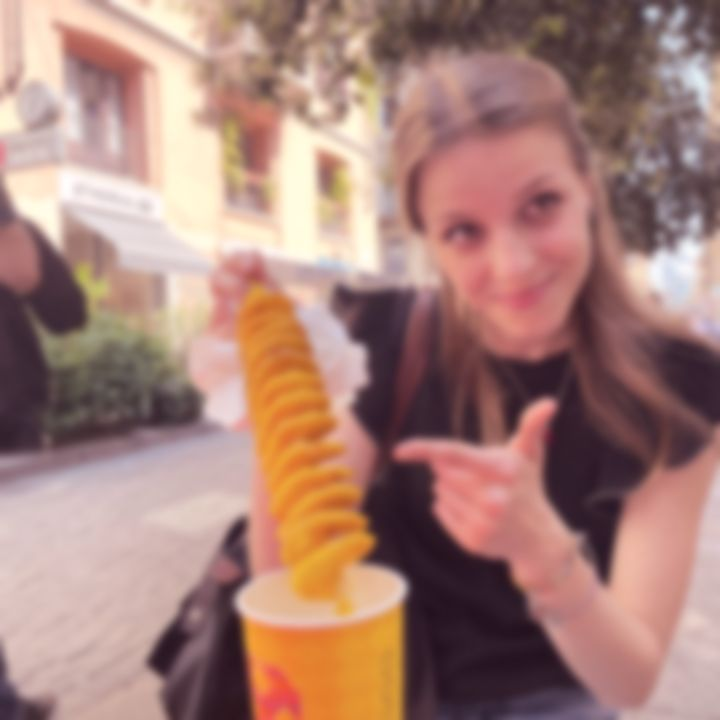

La discesa
Questa è una lettera di chiusura. E una storia, per essere vera, va raccontata tutta: nelle parti più belle e anche in quelle più brutte. Questa è una delle brutte.
Te la racconto lo stesso. Perché se decidi di tenerti tutto questo, di lasciarlo lì e riprenderlo quando vuoi, voglio che sia vero. E che alla fine, nonostante tutto, resti un bel ricordo.
a stare male.
Con me stesso. Con te. Con la tua famiglia. E da lì ho rovinato tutto.
della discesa
che quello della nostra storia.
E questa cosa fa malissimo.
Non trovavo lavoro. Ci provavo, e non arrivava niente. E tu, ogni volta:
vedrai che riesci.”
Mi hai sempre supportato. Sempre. Anche quando io non riuscivo più a supportare nemmeno me stesso.
Se devo trovare un inizio, è Halloween. L'inizio di tutto.
Prima qualche litigata c'era già, come succede. Ma andava ancora bene. Da lì, no.
Non ti ho più portato rispetto come avrei dovuto. Non ti ho più fatta sentire innamorata. Una cosa tirava l'altra, ed è stato sempre peggio.
Poi ho trovato lavoro. A Milano. Quello che aspettavo da tanto, quello che avrebbe dovuto sistemare le cose.

E invece lì è peggiorato ancora di più.
Tutti questi problemi, tutto quello che mi portavo dentro, mi hanno portato anche a fare quella bruttissima cosa.
Non cerco scuse. Non ce ne sono.
E il viaggio in Marocco è stato la fine di tutto. La distruzione totale.
A settembre 2024 ti ho lasciata. E il mese dopo sono tornato. E tu mi hai riaccettato.
Ma, giustamente, ogni giorno si tornava sugli errori che avevo fatto. Si ricalcavano, uno per uno. E io sentivo di meritarlo: di meritare di essere punito, per quello che ti avevo fatto.
ho smesso di vedere la luce.
vedevo solo buio.
completamente buio.
E invece di restare, ti ho lasciata di nuovo. Nel peggio totale. Lì sono stato la persona peggiore che potessi essere.
Pensavo che non si potesse più tornare indietro. Che niente sarebbe più stato come prima.
Eppure, dopo l'estate, sono tornato. E tu mi hai aspettato.
Mi hai aspettato. E invece di chiudermi la porta, mi hai accolto.
Mi hai fatto venire anche alla tua laurea. Tu dicevi che eri sicura che non sarei mai venuto. Sicura.
E invece guarda: ci sono venuto. In after, perché la sera prima era il mio compleanno. Ma ci sono venuto.
Era diverso. C'era ancora qualche strascico, qualche ricaduta. Sempre per colpa mia.
si è aggiunta un'altra cosa.